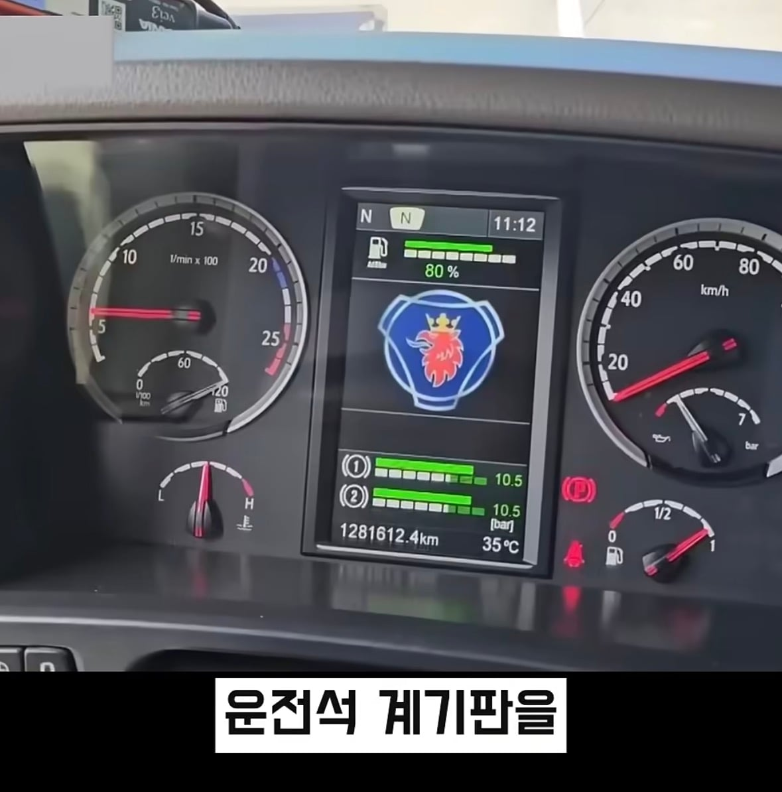
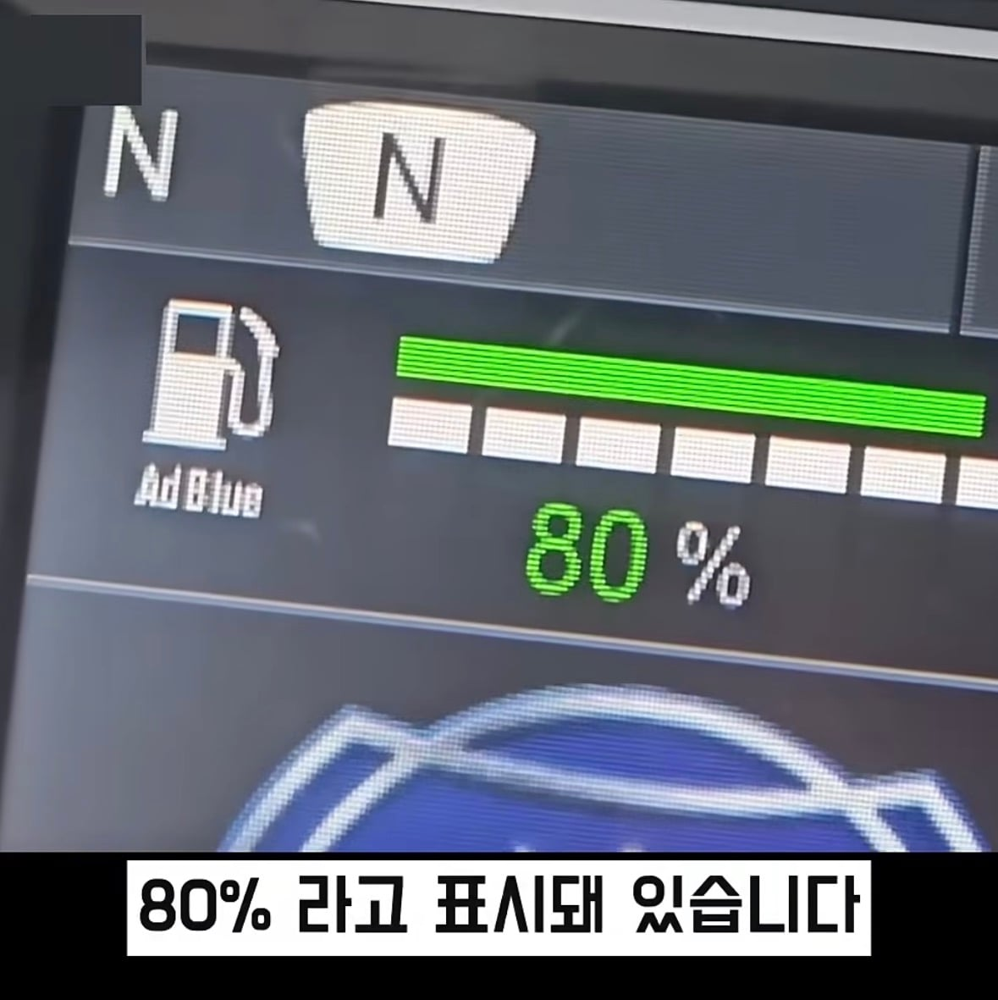
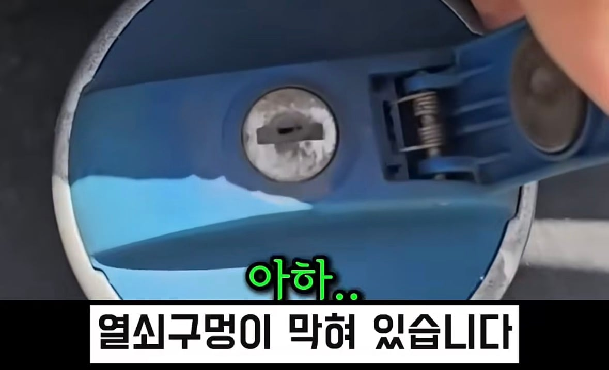
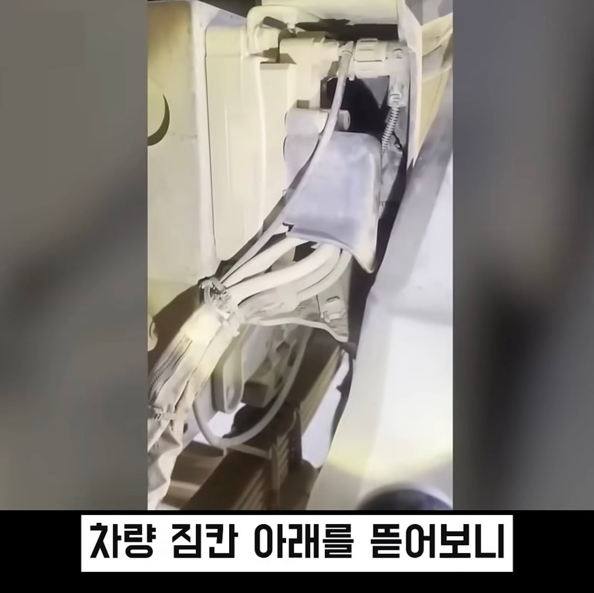
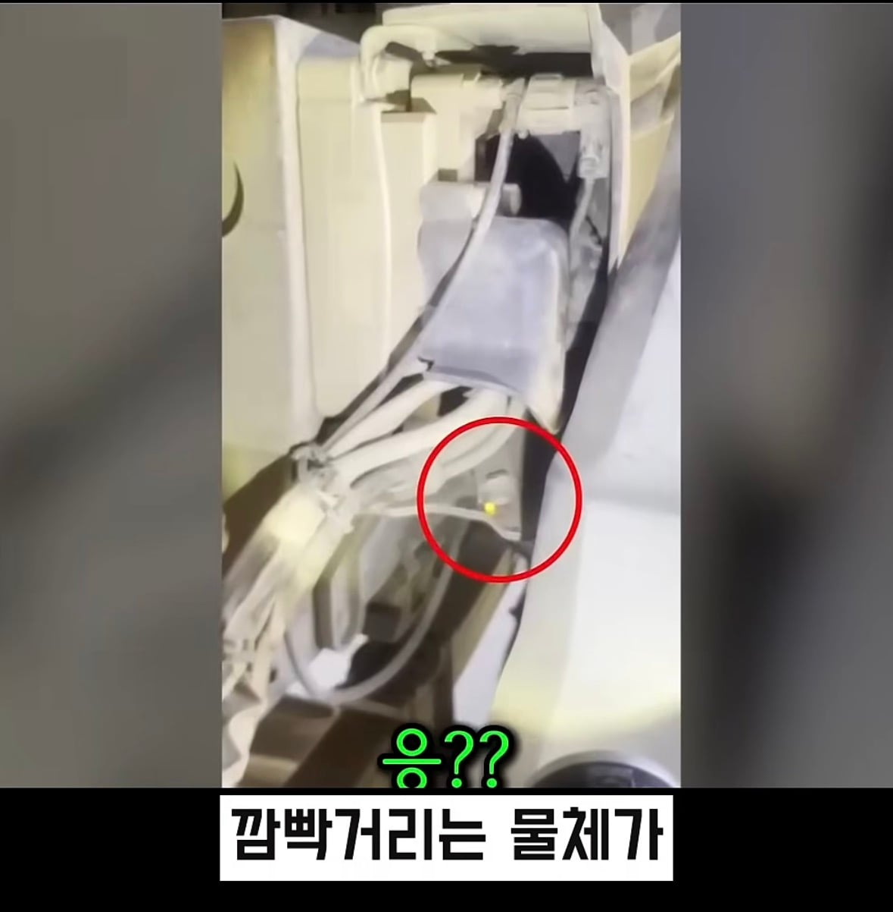
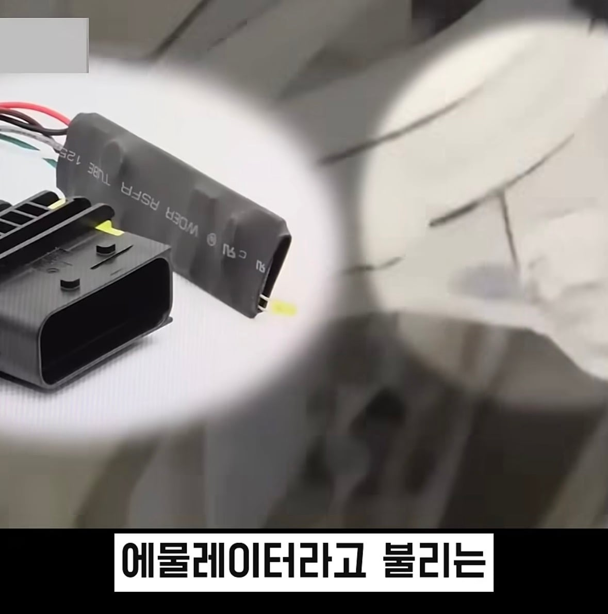
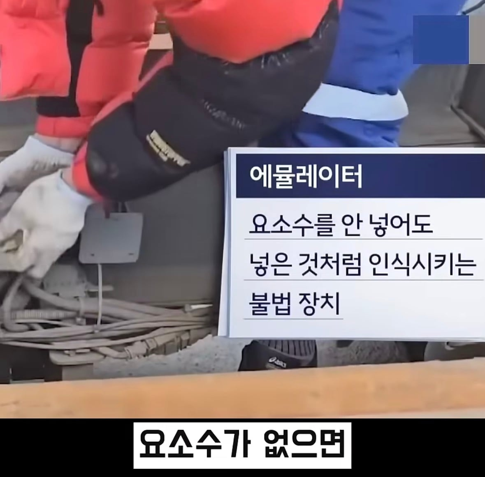
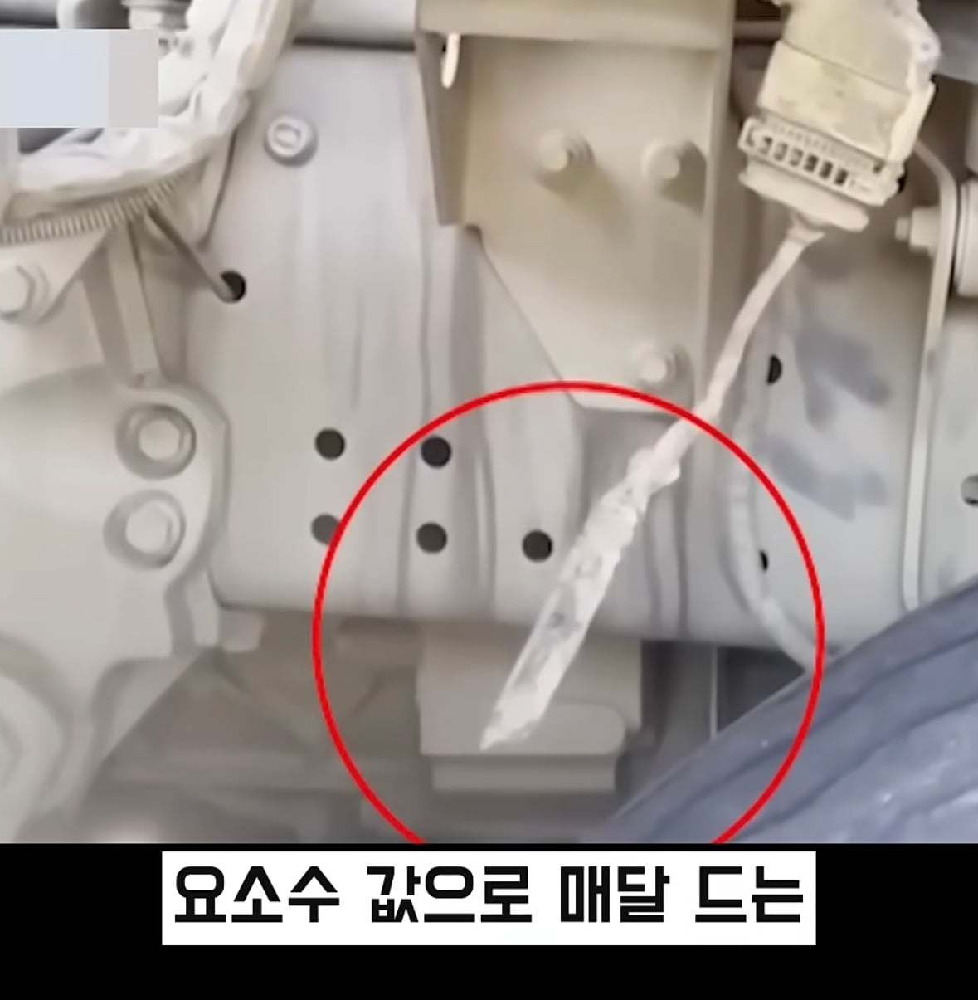
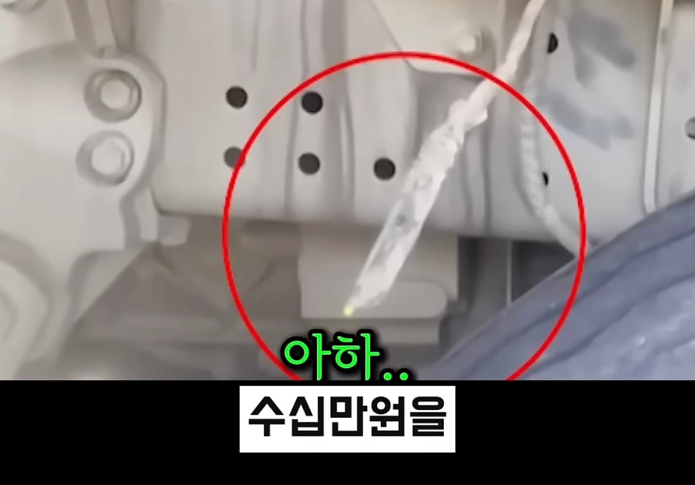

매연 감소에 쓰는 요소수를 안넣으니까









매연 감소에 쓰는 요소수를 안넣으니까
그냥 차 압수하고 전국 물류비용 올리는게 정상적인 나라인데
빅딸 수듄
벌금 3000 이렇게 떼려 걍
그럼 일을 하지마 30~40이 아까우면
에이 별거아니네 그냥 벌금 10억만 내라
종합검사할때 안걸리나? 1년만에 먼지로 구멍이 막힌다고? 가라로 통과시켜주는 검사장이 있는거 아니면 저게 말이 되냐
화물차들 죄다 가라로 지방에 등록해서 종합검사(배출가스, 대기환경법)도 안 받자너
저정도 규모면 월 30이 비싸다고 볼순 없을텐데 거 참
애초에 요소수없이 매연저감하는 기술개발로 몸비틀기해야하는데 출연연 연구직들은 행정직보다 못한대우받아서 다 탈출중